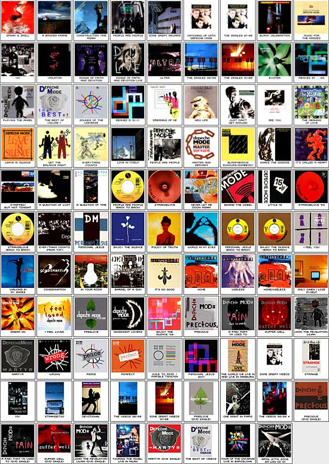

Albumy

Speak And Spell
A Broken Frame
Construction Time Again
People Are People
Some Great Reward
The Singles 81>85
Catching Up With Depeche Mode
Black Celebration
Music For The Masses
101
Violator
Songs Of Faith And Devotion
Songs Of Faith And Devotion Live
Ultra
The Singles 86>98
The Singles 81>85 (Remastered)
Exciter
The Singles 81>98
Remixes 81 - 04
Playing The Angel
The Best Of - Volume 1
Sounds Of The Universe
Copyright Depeche Mode FanPage 2013. Wszelkie prawa zastrzeżone.